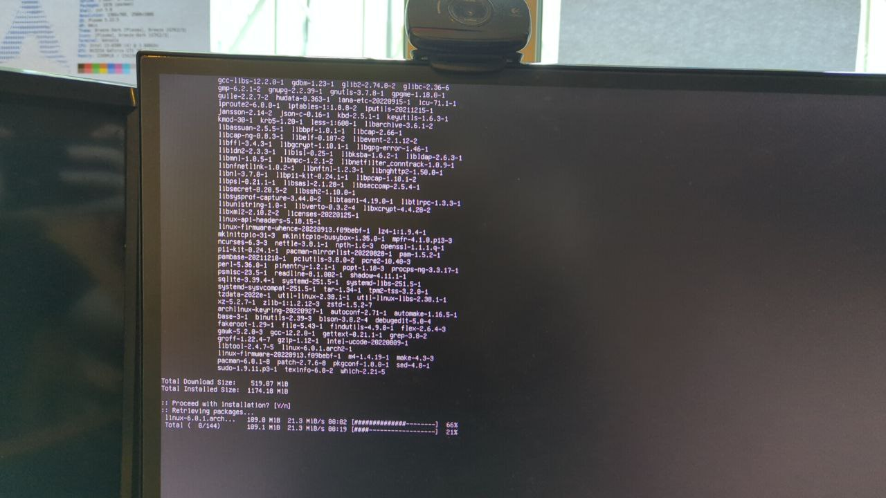
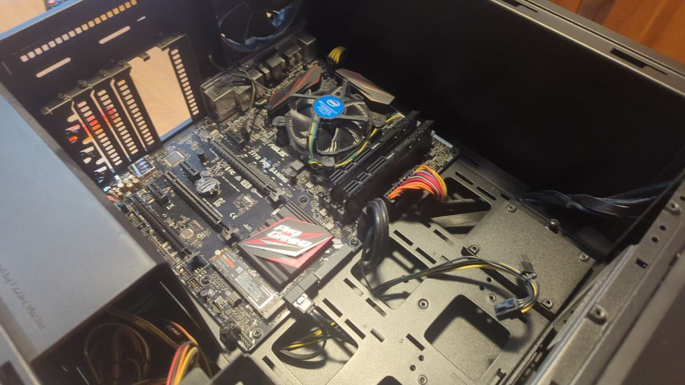
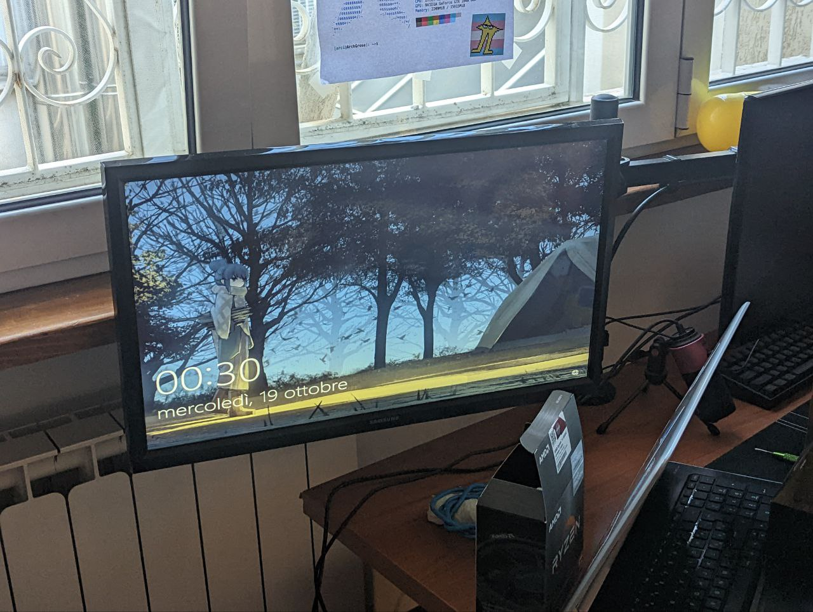
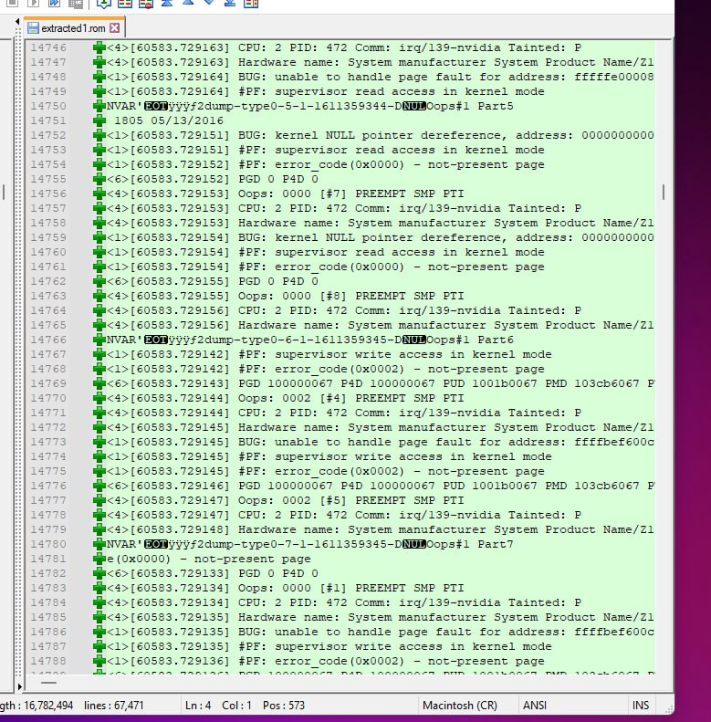
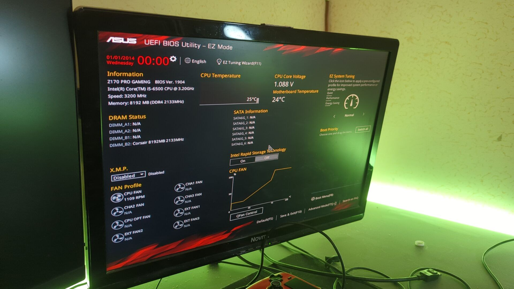

» Quella volta che brickai la mia scheda madre
» Cosa successe un mese prima
Allora, era circa metà settembre 2022 e io stavo usando Arch Linux come sempre. Mi accorsi però che non ho mai installato intel-ucode da quando ho installato Linux (circa 3 anni) e il che era un grandissimo security issue. Allora installo tutto quanto ma dopo aver ricostruisco la config di GRUB, al riavvio, siccome Arch aveva deciso di rompere GRUB, si è riavviato nel bios. Per qualche ragione decisi di togliere Arch e stare su Windows per il momento.
» Come è successo tutto ciò
Dopo un mese di Windows (cosa che non auguro a nessuno) ovviamente decido di installare di nuovo Arch ma questa volta decisi di usare systemd-boot al posto di GRUB per ciò che era successo. Ho usato arch-install per installare il tutto perché non avevo voglia di fare tutto manualmente. Sembra che va tutto bene ma appena riavvio succede letteralmente la megafine, il PC si spegne e si riaccende di continuo senza dare alcun segnale sul monitor.

Faccio letteralmente qualsiasi cosa per risolvere. Ho resettato il CMOS, tolto e rimesso le RAM, rimosso tutti i dischi, tolta la scheda video ma comunque non andava si spegneva e si riaccendeva.

Allora dato che è impossibile (o così credevo) che una installazione di Linux possa brickare una scheda madre mi viene da pensare che era l'ora che quella scheda madre morisse e che il tutto sia successo dopo l'installazione di Arch era solo un caso.
» Rimedio momentaneo
Quindi l'unica soluzione momentanea era quella di usare il portatile come computer principale. Letteralmente un portatile di 9 anni fa che ha tipo il pulsante di accensione mezzo rotto e che dopo una po' di tempo che sta acceso per nessuna ragione va in kernel panic.
» La soluzione costosa
Ovviamente restare con un portatile del genere non era una soluzione. Anche perché occupa un sacco di spazio sulla scrivania e a mala pena potevo giocarci a Minecraft. Quindi in tipo 3 giorni di completa agonia riesco a prendere CPU e scheda madre nuove spendendo tipo 300 euro. Il pro è che avevo una CPU decisamente più potente e di nuovo un pc ma il contro è che avevo 300 euro in meno. Avrei potuto comprare una nuova scheda madre compatibile con il mio vecchio i5 di sesta generazione ma ormai costavano troppo e non sapevo se era rotta la CPU o la scheda madre.
Comunque si alla fine quando sono arrivate ho preso montato tutto quanto e ho impiegato tipo 4 ore perché skill issues. Il tutto funzionava molto bene, peccato però che avevo 300 euro in meno.

» La soluzione meno costosa (che ovviamente arriva sempre tardi)
A gennaio, dopo 4 mesi, per qualche ragione mi sono imbattuta in questa guida per come usare me_cleaner sulla mia vecchia scheda madre. Noto benissimo che il chip del bios è estraibile e per vedere se fosse successo realmente qualcosa nel bios compro un dispositivo che legge e scrive sul chip del bios.
Il dispositivo arriva dopo 2 giorni e dopo aver tolto il durissimo chip del bios dalla scheda madre ho estratto la rom.
» Cosa ho trovato
Qui arrivano le cose belle. Appena apro il file sembra che sia molto simile a quello originale ma poi guardando meglio trovo cose molto sospette. Infatti nella rom del bios che ho estratto ci stavano i dmesg di errori avvenuti tipo 3 anni fa e persino una boot entry di quando feci hackintosh nel 2016 che conteneva anche la mia email (privacy issue).

Si è normale che ci siano robe di Linux perché per qualche ragione i dmesg possono essere scritti sulla NVRAM, però, in quella parte del file, insieme ai dmesg, ci stavano anche cose per le sequenze di boot e, probabilmente, systemd-boot ha scritto qualcosa che ad Asus non piaceva e quindi non riusciva più ad avviarsi.
» E ora?
Ancora non sapevo se si poteva trovare un fix ma ho deciso di flashare il chip con la rom originale (che però perdi serial number e indirizzo MAC). Aspetto per varie complicanze un mese per poter vedere se funziona ma "montando" la scheda madre su una testbench molto improvvisata veniva fuori un altro problema che era diverso da quello originale e facendo altre prove, tipo cambiando lo slot delle ram, letteralmente si accende e va nel bios. Ora non so se riuscirebbe ad avviare Linux o Windows ma almeno so qual è stata la causa (Systemd-boot o/e arch-install).

» Cosa ho imparato
Oltre a sapere come si flasha un bios chip, so anche che non bisogna mai fidarsi di systemd-boot (o di arch-install) e si deve sempre usare GRUB sennò succede questa cosa molto brutta e mi ritrovo con un scheda madre mattonata.